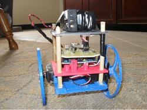
The goal of this project is to make a self balancing robot, also called an inverted pendulum. The basic idea is that you have a mass located above its pivot point. This causes the robot to be unstable, and without any help, it will quickly fall over. Sensors on the robot will take acceleration and gyroscope measurements, which are sent to a control algorithm. As the robot starts to fall, the control algorithm will send a signal to the motor, telling it which direction and how much to move in order to keep the robot upright. This project involves a huge range of knowledge from mathematics, mechanics, and programming. And as I've quickly learned, the theory is a lot more complex than I originally thought. When I set out to make this robot, I decided to work towards a few specific goals:
- Keep the cost as low as possible
- Print all of the mechanical/structural parts on my 3D printer
Structural
I decided to use a four level design. The lower level holds the motor and the bushings for the axle. The second level holds the Arduino Uno board. The third level contains the H-bridge and the sensors. The fourth level holds the batteries.
Designing the structural parts was fairly easy. All the levels except for the first are just flat rectangles. The first level, holding the motor and axle, was a bit more complex. I’m using spur gears to drive the wheels for now. I may switch to herringbone gears if backlash becomes a problem.
Here’s a picture showing the three levels (battery level not shown)
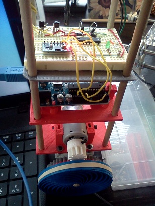
Electronics
I had originally planned on building my own sensor board to keep the costs down. The accelerometer and gyroscope can be bought for about $5 total. The only problem is that they’re very small chips- about 3mm x 3mm. The pads are even smaller at about 0.4mm. I managed to solder a few of the connections, but ended up pulling off a pad on the accelerometer. Instead, I decided to buy a pre-made 6 degree of freedom board that had the accelerometer and gyroscope already on it.
I’m using an H-bridge (sn754410) to control the motor. The logic level for the H-bridge is 4.5V, which is higher than the 3.3V that the i/o pins on the arduino can put out. The motor will be connected to a 12V source, so I used level shifter with MOSFETs and 5V zener diodes to bring the 3.3V signal up above that level.
Here’s the completed electronics set up on a breadboard.
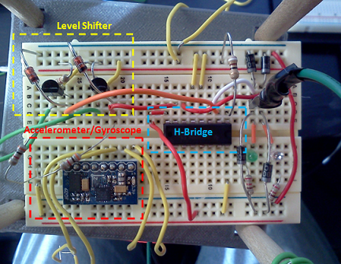
Code
The actual code to run the robot is my biggest hurdle right now. I don’t have a lot of experience writing C code, so I’ll consider this a crash course. So far I’ve gotten the communication with the accelerometer and gyroscope working. This was actually fairly easy since both sensors run on I2C. I’ll wait until I have the completed code to post it.
I’ve also gotten the calculation for the inclination angle to work. The inclination angle measures the angle that the Z-axis of the robot makes with the direction of gravity (from the accelerometer). This data sheet for a different accelerometer give a very good explanation of how to calculate the inclination angle. Here’s the take home message:
The inclination angle can be using the following equation:
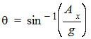
Where g is the vector in the direction of gravity and given by the magnitude of the X and Z vectors from the acceleration data.
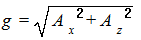
From this, it’s easy to do a linear approximation for the inclination angle given by:
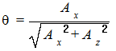
This equation will output a number ranging from 0 (upright, 0 degrees) to 1 (fallen, 90 degrees). The plot below (borrowed from the data sheet) shows the exact Θ calculation and the linear approximation that I’ll be using. The linear approximation fits very well at Θ angles less than about 20o. This is perfectly fine for the robot since it won’t be able to recover from a 20o Θ angle anyway.
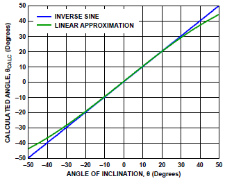
The drawing below shows the inclination angle (Θ) and how it changes as the robot falls. The inclination angle when it’s standing perfectly upright will be 0 and it increases until it hits the ground, at which point the inclination will be 1 or sin-1(1)=π/2.
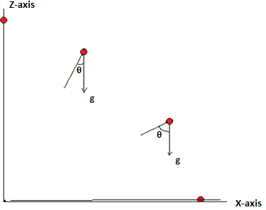
This is what the output for the inclination looks like on the serial monitor.
The next plan is to get the gyroscope calculation to work and use it with the accelerometer in a Kalman filter.
Balancing Robot Ver. 2
I found a fatal flaw in the design for the first version of the balancing robot. Now that I have everything working on it, I can see that the motor from the surplus store does not have nearly have enough torque to keep the robot from falling.As the robot begins to tip, the motor tries to catch it, but it just can't do it.
This is what it looks like. It will fall over pretty quickly if I let go of it. The two LEDs on the controller board indicate its forward or reverse direction, so you can see that it's trying to balance.
I changed the design a bit to use some stepper motors from an old laser printer. Stepper motors have plenty of torque, but they don't move very quickly, which I worry may be another problem. This idea was also short-lived. The stepper motors did have plenty of torque, but their jerky movement caused a lot of vibration in the robot. This vibration made the gyroscope sensor very noisy. I decided to order some continuous rotation servos and try to use them instead. Servos also don't move very quickly but have plenty of torque and should move much more smoothly than the stepper motors.
That's enough of the design aspect for now. On to the rest of the theory.
I have now implemented both the Kalman filter and PID controller. PID stands for Porportional Integral Derivative. Here is a nice block diagram showing the basic flow of data for the PID (borrowed from wikipedia). The raw data goes into the PID and different parameters are applied to it. The different parts of the PID are then combined and sent to the robot as a motor movement command. Then a feedback loop
sends the results of the actual motion back through the filters again.
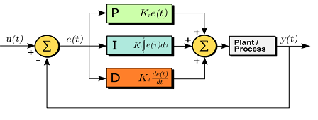
Mathmatically the PID control looks like this:
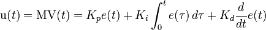
Where Kp, Ki, and Kd represent the proportional, integral, and derivative perameters, respectively. The proportional parameter
acts as a mutiplier and produces an output that is proportional to the current error measurement. The integral parameter
represents the accumulation of past errors. A high Ki will act to resist even the smallest change in movement. Since it is
based on past errors, it may cause the present value to overshoot the desired point. The derivative parameter is the slope of the
error over time and effectively works to dampen any large corrections that might otherwise overshoot the set point. Large Kd
values will also greatly slow the correction response.
The Kalman filter is a complex subject. I'll try my best to give a simple (non-mathematical) explanation.
The basic idea is that a perfect model for the motion and angle of the robot exists. Unfortunately,
this perfect model is very difficult or impossible to determine. There are just too many unknown variables in
the system to determine this model. Instead, we can use the imperfect measurements
from the accelerometer, gyroscope, and a Kalman filter to get a very good estimate of the angle.
The two sensors give an estimate of the angle, but their measurements are not 100% accurate. There is noise, bias,
and drift to deal with. The Kalman filter is a way to put these two sensor measurements together to get a
better estimate of what is happening with the robot i.e., the inclination angle.
The end result of the PID and Kalman filter is to clean up what will otherwise be a noisy signal. The signal from the accelerometer is dependent on the gravitational force felt on each axis. As the robot falls over, it will show an acceleration toward the floor. Likewise, as the fall is corrected, it will show acceleration away from the floor. If the acceleration away from the floor is great enough, the signal from the accelerometer will look as if the robot has greatly over-corrected. This is bad for any steady equilibrium. The two filters will hopefully take care of this problem.
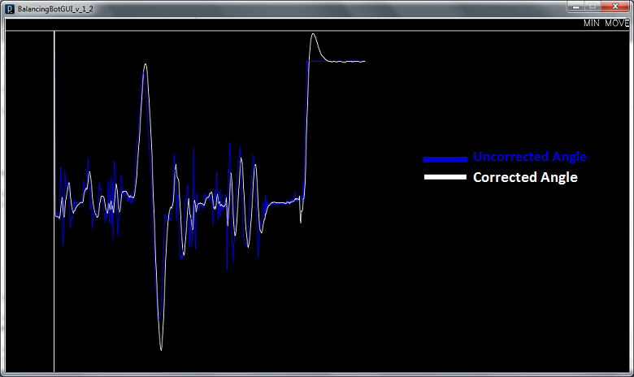
Balancing Robot Ver. 3
Robot gets a makeover plus a DIY printed circuit board
The servo motors arrived, and I did a quick hack job of gluing the new motors on in order to test them. Good news, it works! The new motors do a pretty good job of balancing the robot. At 50 rpm max, they're a bit on the slow side, so the robot has a bit of trouble recovering from large pushes.
I decided to make a new printed motor platform specifically to hold the new servos. I also printed new wheels. I was
worried about the ridigity of the whole robot after seeing how excessive vibrations caused the sensors to go
crazy in version 2. The new wheels are very rigid, and everything is nicely glued together now.
I have been visiting the local hacker space (FUBAR Labs) where I learned about a very easy-to-use PCB layout software called Fritzing. I used this program to design a protoype for an Arduino motor/sensor shield. I took the original H-bridge design and expanded it to be more useful. The board has the H-bridge, which can control two DC motors or one stepper motor, accelerometer/gyroscope, and two servo connections.
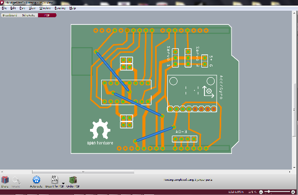
I printed out the design using a laser printer onto dextrin coated paper. Then the toner was transferred to the copper board using a laminator. Finally, the excess copper was etched away using ferric chloride. Here's the etched board.
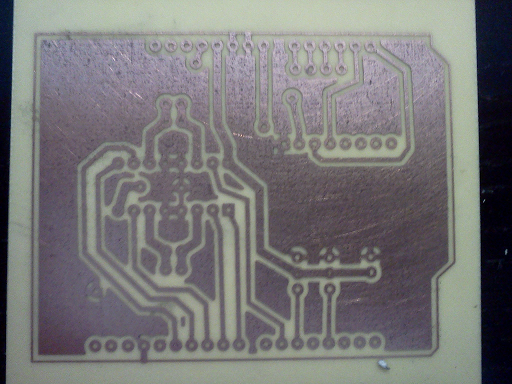
Here's the assembled board on the robot. Its at a point now where it can balance indefinitely and recover from small pushes. The servos are a bit too slow for it to recover from larger pushes like I expected.
And a video of the final robot!
I've placed all of the code and 3d printer files on my Github page. And here are a few links that I found very useful in builing this robot
http://www.arduino.cc/cgi-bin/yabb2/YaBB.pl?num=1284738418/all
http://www.kerrywong.com/2012/03/08/a-self-balancing-robot-i
Comments !
comments powered by Disqus